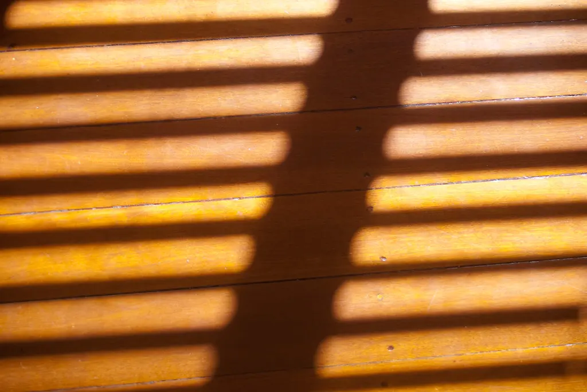
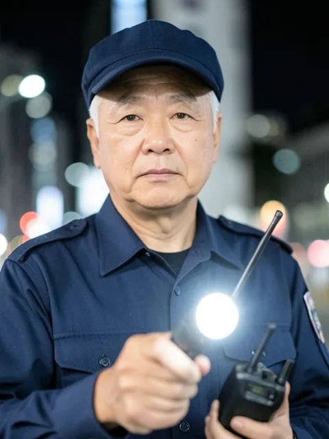

한소라
프로덕트 매니저 · 29세
오픈 일정을 총괄한다. 그날 밤 늦게까지 회사에 있었다.

오픈 전날 밤, 운영 DB의 사용자 테이블이 지워졌다. 감사 로그는 23:40부터 00:10까지 비어 있다.
그 밤 건물에는 일곱 명이 있었다. 진술과 기록을 맞대어 어긋나는 곳을 찾아라.
등장인물 사진은 AI가 만든 가상의 인물입니다. 실존 인물과 관계없습니다.
프로덕트 매니저 · 29세
오픈 일정을 총괄한다. 그날 밤 늦게까지 회사에 있었다.

야간 경비원 · 58세
출입 기록과 순찰을 맡는다. 건물 구조를 가장 잘 안다.

DBA · 45세
운영 DB 계정과 백업을 관리한다. 말수가 적다.

야간 청소원 · 54세
밤마다 지하와 복도를 돈다. 건물에서 일한 지 10년째다.
신입 개발자 · 26세 · 사진 준비 중
입사 석 달째. 오픈 준비 작업을 도왔다.
시니어 백엔드 개발자 · 41세 · 사진 준비 중
서버 구조를 설계했다. 오픈 책임자 중 한 명이다.
외주 개발자 · 34세 · 사진 준비 중
외주로 합류했다. 오픈 대응 작업을 돕는다.